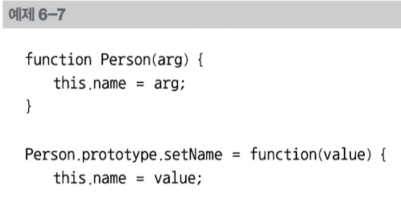
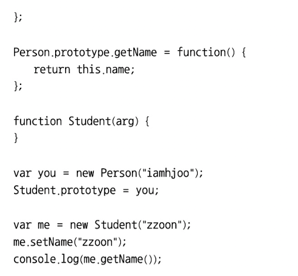
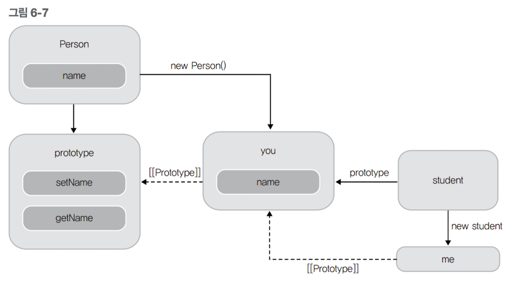
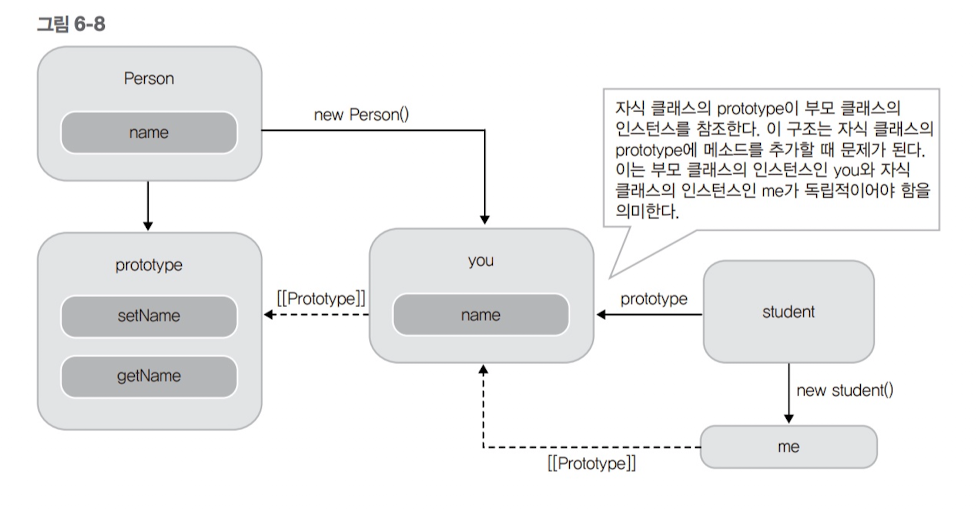
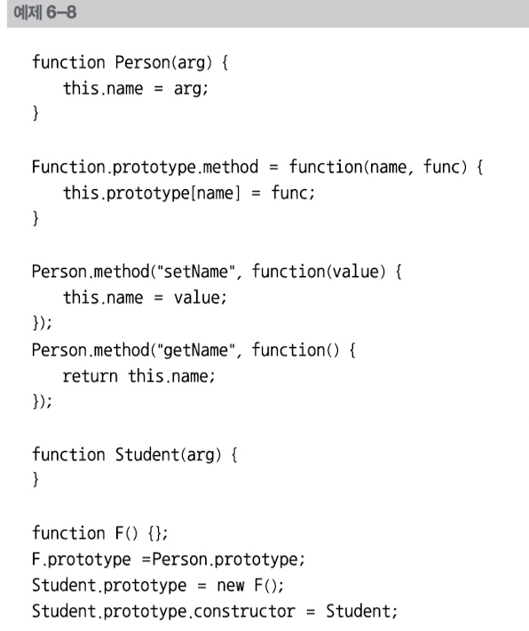
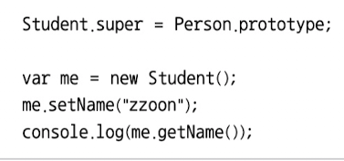
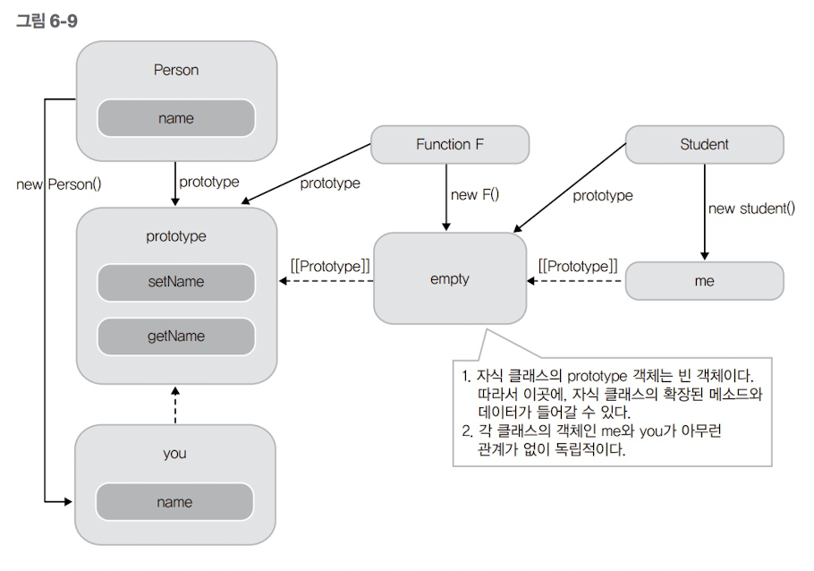
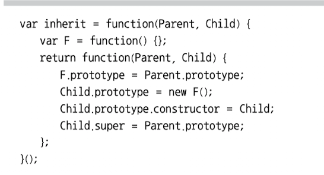

클래스 기반의 상속
클래스 기반의 상속을 소개할 차례다. 사실 클래스 기반의 상속이라고는 하나, 원리는 6.2.1 프로토타입을 이용한 상속에서 소개한 내용과 거의 같다. 앞 절처럼 함수의 프로토타입을 적절히 엮어서 상속을 구현해낸다. 다만 앞 절에서는 객체 리터럴로 생성된 객체의 상속을 소개했지만, 여기서는 클래스의 역할을 하는 함수로 상속을 구현한다.


앞 예제에서 Student 함수 객체를 만들어서, 이 함수 객체의 프로토타입으로 하여금 Person 함수 객체의 인스턴스를 참조하게 만들었다. 이렇게 하면 Student 함수 객체로 생성된 객체 me의 [[Prototype]] 링크가 생성자의 프로토타입 프로퍼티 Student.prototype인 you를 가리키고, new Person()으로 만들어진 객체의 [[Prototype]] 링크는 Person.prototype을 가리키는 프로토타입 체인이 형성된다. 따라서 객체 me는 Person.prototype 프로퍼티에 접근할 수 있고, setName()과 getName()을 호출할 수 있다. 이를 그림으로 표현하면 다음과 같다.

그러나 예제6-7은 문제가 있다. 먼저 me 인스턴스를 생성할 때 부모 클래스인 Person의 생성자를 호출하지 않는다. ==================================== var me = new Student("zzoon"); ==================================== 이 코드로 me 인스턴스를 생성할 때 "zzoon"을 인자로 넘겼으나, 이를 반영하는 코드는 어디에도 없다. 결국 생성된 me 객체는 빈 객체이다. setName() 메서드가 호출되고 나서야 me 객체에 name 프로퍼티가 만들어진다. 이렇게 부모의 생성자가 호출되지 않으면, 인스턴스의 초기화가 제대로 이루어지지 않아 문제가 발생할 수 있다. 이를 해결하려면 Student 함수에 다음 코드를 추가하여 부모 클래스의 생성자를 호출해야 한다. ==================================== function Student(arg) { Person.apply(this, arguments); } ==================================== Student 함수 안에서 새롭게 생성된 객체를 apply 함수의 첫 번째 인자로 넘겨 Person 함수를 실행시킨다. 이런 방식으로 자식 클래스의 인스턴스에 대해서도 부모 클래스의 생성자를 실행시킬 수 있다. 클래스 간의 상속에서 하위 클래스의 인스턴스를 생성할 때, 부모 클래스의 생성자를 호출해야 하는데, 이 경우에 필요한 방식이다. 여기서 조금만 더 발전시켜 보자. 현재는 자식 클래스의 객체가 부모 클래스의 객체를 프로토타입 체인으로 직접 접근한다. 하지만 부모 클래스의 인스턴스와 자식 클래스의 인스턴스는 서로 독립적일 필요가 있다. 다음 그림을 보면 이해가 쉬울 것이다.

두 클래스의 프로토타입 사이에 중개자를 하나 만들어보자.


예제 6-8의 프로토타입 체인 형성 과정은 6.2.1 프로토타입을 이용한 상속의 상속 방식과 매우 유사하다. 어차피 함수의 프로토타입을 이용한 것이니 비슷할 수밖에 없다. 여기에서도 빈 함수 F()를 생성하고, 이 F()의 인스턴스를 Person.prototype과 Student 사이에 두었다. 그리고 이 인스턴스를 Student.prototype에 참조되게 한다. 다음 그림으로 이해해보자.

그림에서 보는 바와 같이 빈 함수의 객체를 중간에 두어 Person의 인스턴스와 Student의 인스턴스를 서로 독립적으로 만들었다. 이제 Person 함수 객체에서 this에 바인딩되는 것은 Student의 인스턴스가 접근할 수 없다. 이 상속이 앞서 소개된 상속보다 좀 더 나은 코드이다. Javascript Patterns 의 저자 스토얀 스테파노프는 상속 관계를 즉시 실행 함수와 클로저를 활용하여 최적화된 함수로 소개하였는데, 그 코드는 다음과 같다.

앞 코드에서 클로저(반환되는 함수)는 F()함수를 지속적으로 참조하므로, F()는 가비지 컬렉션의 대상이 되지 않고 계속 남아있다. 이를 이용해 함수 F()의 생성은 단 한번 이루어지고 inherit 함수가 계속해서 호출되어도 함수 F()의 생성을 할 필요가 없다. 지금까지 자바스크립트로 구현하는 상속을 살펴보았다. 함수 생성자를 이용해 상속하는 방법이나, 객체 리터럴을 그대로 상속하는 방법은 프로토타입 체인을 이용하는 원리는 같다. 이러한 원리만 제대로 파악하고 있다면 앞에서 소개된 방식 말고도 다른 여러 가지 방법으로 상속을 구현할 수 있다.